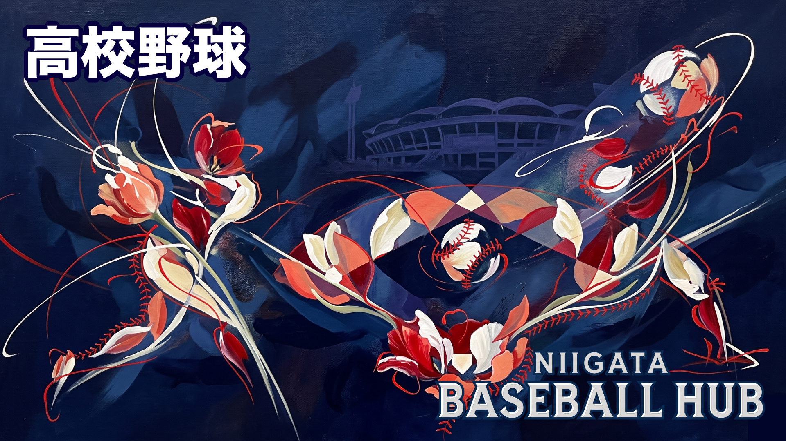

🏫
HIGH SCHOOL BASEBALL
高校野球
2026年夏の新潟大会 出場66チーム（77校）を完全掲載。合同チームも正確に表示。公式サイト・Instagramリンクつき。
66
出場チーム
77
出場校数
6
合同チーム
第108回 夏の新潟大会 出場チーム
2026年 7/9〜7/24📷アイコンで Instagram、🏫で学校HP、⚾で高校野球ドットコムの各ページへリンクします。
📍 新潟市 （14校）
新潟江南公立
新潟農公立
※ 新潟向陽・新潟北・新発田商は合同チームとして出場 → 「合同チーム」タブ参照
📍 下越地区（新発田・村上・阿賀野・五泉 他）（7校）
新発田農公立
新発田南公立
村上桜ケ丘公立
阿賀黎明公立
※ 新発田商・碧・村上・中条は合同チームとして出場 → 「合同チーム」タブ参照
📍 中越地区（長岡・三条・小千谷・十日町・魚沼 他）（17校）
見附公立
分水公立
※ 見附・分水・三条商、長岡農・正徳館・栃尾は合同チームとして出場 → 「合同チーム」タブ参照
📍 上越地区（柏崎・高田・上越・糸魚川 他）（8校）
※ 高田商・新井・糸魚川白嶺、柏崎常盤・柏崎総合は合同チームとして出場 → 「合同チーム」タブ参照
📍 佐渡 （2校）
甲子園出場歴のある強豪校を中心に掲載。🥇バッジが私立校の目印です。
開志学園私立
⭐ 女子硬式野球部も全国トップクラス
東京学館新潟私立
新潟青陵私立
2026年夏の新潟大会では連合6チームが出場します（66チーム中）。複数校が合同でエントリーしています。
※ 合同チームに参加している各校（新潟向陽・新発田商・新潟北・三条商等）は単独での野球部活動を行っています。大会への合同出場のみです。
2026年 大会日程
SCHEDULE全国大会甲子園・全国レベル
第108回 全国高校野球選手権大会（夏の甲子園）
明治神宮野球大会（高校の部）
新潟県大会夏・秋・春
第108回 全国高校野球選手権 新潟大会
秋季新潟県大会
秋季北信越大会（開催地：新潟県）
春季新潟県大会（2026年春 優勝：新潟明訓）
過去の主な実績新潟の甲子園
日本文理 — 2009年夏 準優勝
帝京長岡 — 芝草監督のもと急成長
中越 — 昨夏（2025年）王者